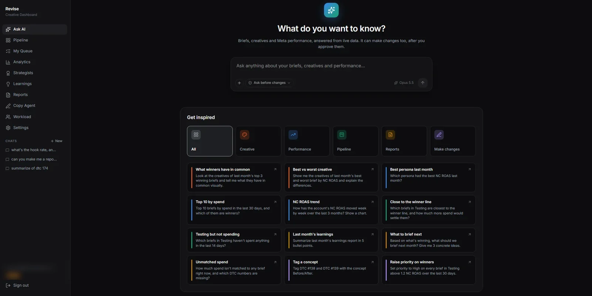
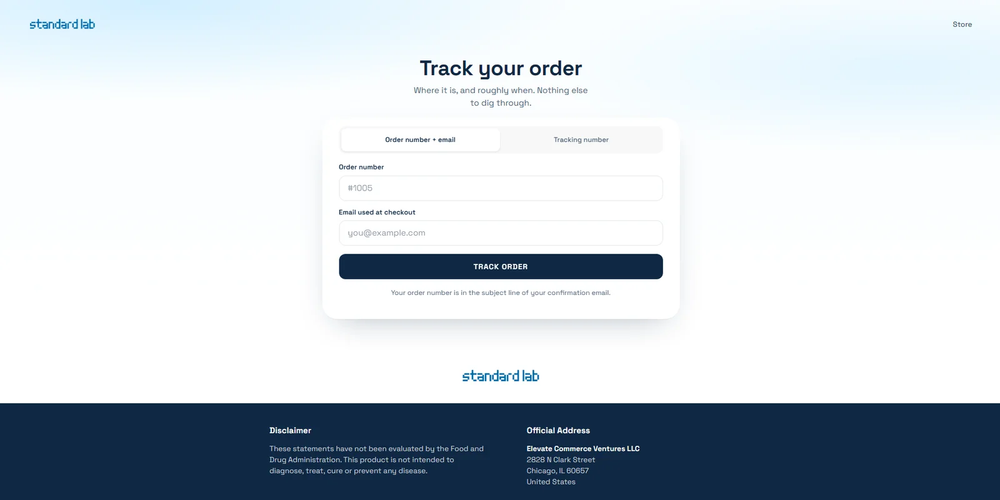
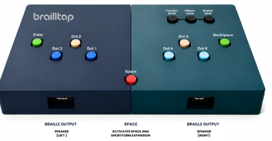

Projects
-
2026

Creative Operations Dashboard
Runs The Standard Lab's ad-production pipeline from concept to performance results. It replaced the spreadsheets and chat threads that 50 team members used to coordinate through.
The hard part was the routing, not the screens: a stage-gated workflow with role-based access and a submit, approve and revision path, so each task lands with the right person without anyone chasing it. Autosave and real-time data keep everyone on the same version.
AI copywriting on the Claude and Gemini APIs: drafting time from 6 hours to 1 minute
-
2026

Standard Lab Tracking
A parcel tracking and returns platform for the company's Shopify store. It replaced a paid third-party tracking app with a branded page on the company's own domain.
The 17TRACK API registers and polls every parcel across multiple carriers, and the raw carrier updates are reduced to one status timeline. Orders and fulfillments arrive on their own through Shopify OAuth and signature-verified webhooks.
10,000+ parcels tracked; 7 Klaviyo flows send 150+ updates a day with zero failures
-
Hardware

BraillTap
A Raspberry Pi 4 Braille keyboard with text-to-speech, co-developed with a 3D-printed enclosure. The six keys follow the Braille machines SPED teachers already use, so students do not have to learn a new layout.
Every letter or word is read aloud as it is typed, through a PCM5102 I2S DAC and a PAM8403 amplifier, so a student can catch a mistake without a teacher beside them. Grade 2 contractions work in English and Filipino.
Five-day study against slate and stylus: contraction accuracy 72.5% to 93.3%, typing errors down to zero
Experience
-
Jan – Aug 2026
Software Engineer & Shopify Web Developer
The Standard Lab, freelance, remote
- Designed, built and deployed both projects above, end to end, and ran them in production on Vercel: Supabase auth, server-side API routes, environment configuration, and production bugs fixed as they surfaced.
- Turned the marketing team's copy documents into custom HTML and CSS landing pages on the Shopify store, editing the theme so each page matched the brand and linked straight to products and checkout.
-
Jul – Oct 2025
Field Service Engineer Intern
TOWA Semiconductor Equipment Philippines
Maintained and troubleshot semiconductor production machines alongside senior engineers, and ran PLC and HMI software backups and version upgrades.
-
May 2024 – Jun 2025
Freelance Video Editor (AI) / Social Media VA
Connex Media
Edited long- and short-form video with AI-generated B-roll and held a 100% on-time delivery rate. Creative portfolio
-
Jul 2023 – Apr 2024
Member Services Specialist / IT Support
Social Security System (SSS)
Front-line support and staff training. Implemented a streamlined online system that cut client processing time by 30%. It is hard to ship a confusing interface after months of walking people through one.
Skills
- Full-stack
- JavaScript, TypeScript, React, Next.js, HTML, CSS
- Backend and data
- SQL, PostgreSQL, Supabase, REST APIs
- AI integration
- Claude and Claude Code, Gemini, N8N, prompt engineering; Higgsfield, Google Veo, Grok and Kling for video
- Deployment
- Vercel, Git and GitHub, environment configuration
- Languages
- Python, Java, C#
- Hardware and networks
- Arduino microcontrollers, Raspberry Pi, Cisco networking fundamentals
- Tools
- VS Code, Cursor, Google Workspace, Microsoft Office
Education and certifications
- Sep 2026
- BS Computer Engineering, Polytechnic University of the Philippines. President's Lister, 1.24 GWA.
- Jun 2026
- TESDA Cyber Threat Monitoring Level I (RADENTA)
- Jun 2026
- Fortinet NSE 1, 2 and 3 Cybersecurity
- Dec 2022
- Toshiba: Infrastructure Server and Network & Software Development
Seminars and workshops (13)
- Jul 2025 ICpEP: Next-Gen AI in Action, Transforming Academe and Engineering Workflows
- Jun 2025 APAC Cybersecurity Fund: Cyber Hygiene for Students Workshop
- Jun 2025 ICpEP: Formulating Competitive Marketing Strategies in the Digital Age
- Jun 2025 ICpEP: Blockchain Is Not Just Crypto
- Jun 2025 DICT: National Cybersecurity Plan
- Jun 2025 ICpEP: Future of Development, Will Vibe Coding Replace Traditional Programming?
- May 2025 DEVCON Laguna: Python Introduction with Microcontrollers
- May 2025 DICT: Cyber Tools for the Institute of Computer Engineers of the Philippines
- Apr 2025 Zuitt: Free Coding Bootcamp, Basic Web Development Workshop
- Apr 2025 DICT: Cyber Threat Landscape and Cyber Hygiene
- Apr 2025 ICpEP: AI and Prompt Engineering in Educational Settings
- May 2024 SQL Mastery 101: Navigating Basics and Beyond in Database Proficiency
- Mar 2024 Figma Seminar: Elevating Front-End Development with Figma
Contact
Email is the fastest way to reach me.
- Phone
- +63 930 516 1213
- Based in
- San Pedro, Laguna, Philippines
- GitHub
- github.com/Dreygg526
- linkedin.com/in/roan-andrei-uson
Hand-built in HTML, CSS and vanilla JavaScript. Set in IBM Plex Sans and IBM Plex Sans Condensed.